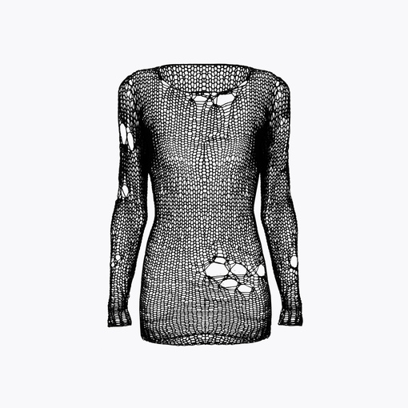

Туника вязаная унисекс
Описание товара
Туника унисекс в стиле гранж, связана вручную из хлопковой пряжи, неоднородная вязка с декоративными дырами, прилегающий силуэт.
Характеристики товара
- Сделано в Санкт-Петербурге
- Материалы: 55% хлопок, 45% акрил
- Размер под заказ
Подробное описание товара
Данная модель "летучая мышь", смотрится празднично, вяжется не сложно. Будет эффектно смотреться не только с юбкой, но и с брюками. Вяжется горизонтально квадратами из лицевых и изнаночных петель. 20 петель изнаночных, 20 петель лицевых и так 26 рядов, затем 20 лицевых, 20 изнаночных и так тоже 26 рядов. Получаются такие интересные квадраты.